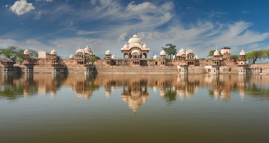

Discover the Charm of Mathura, India
Mathura is a city located in the state of Uttar Pradesh, India, and is considered one of the seven holiest cities in Hinduism. It is the birthplace of Lord Krishna, a central figure in Hindu mythology, and is known for its rich cultural heritage, spiritual significance, and vibrant atmosphere. From iconic landmarks to colorful festivals and delicious local cuisine, Mathura has something for every traveler. Explore the city and discover its enchanting charm!
Popular Attractions in Mathura
© 2022 Mathura Tourism. All rights reserved.